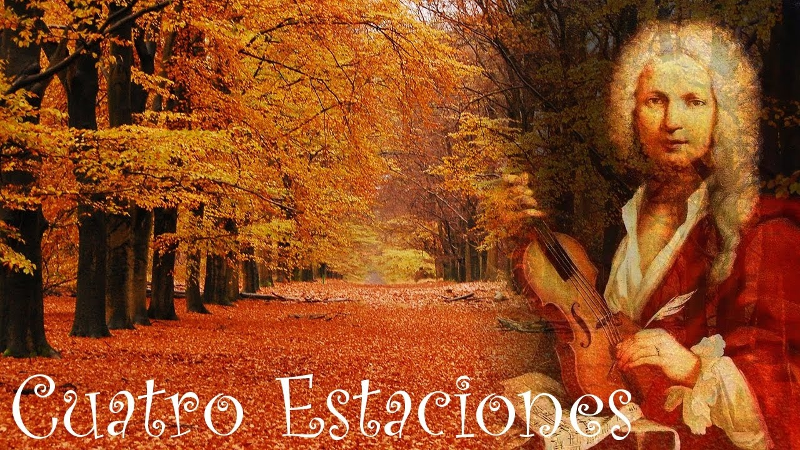
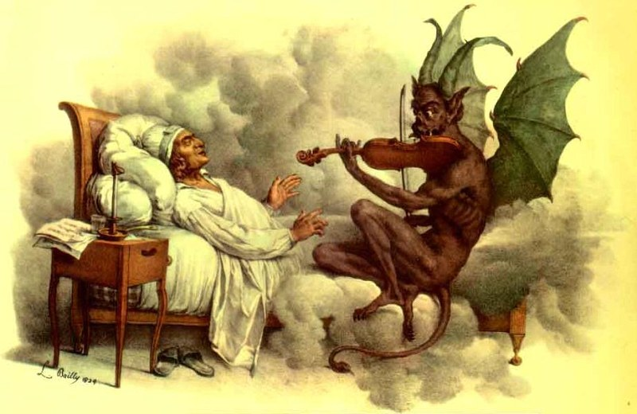
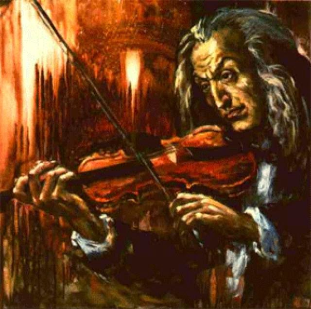

|

Las cuatro estaciones-Vivaldi En Las cuatro estaciones (1725) de Antonio Vivaldi (1678-1741) se puede escuchar cómo se representa el paso del tiempo a través de los paisajes sonoros y de una visión programática de la música. Estas piezas no son meramente una idea de la naturaleza, una sucesión de referentes lejanos, sino que sugieren que su compositor pasó largas horas escuchando y observando el paisaje para plasmarlo en la partitura. |

Capricho n.º 24-Paganini Una de las piezas para violín solo más famosas. La obra está en la tonalidad de la menor y está formada por un tema, once variaciones y un final. Se considera que es una de las piezas técnicamente más complejas escritas para el instrumento. Para poder ejecutarla se requiere el dominio de técnicas como los intervalos de octava, décimas y terceras (mayores y menores) en dobles cuerdas, escalas y arpegios a gran velocidad, pizzicato de mano izquierda, posiciones altas y rápidos cambios de cuerda. |

La Campanella-Paganini La campanella (del italiano: La campanilla) es un estudio para piano compuesto por el pianista y compositor Franz Liszt. Es el estudio n.º 3 de los Grandes Études de Paganini y está escrito en la tonalidad de Sol sostenido menor (G#m). La pieza está basada en un tema de la última parte del concierto para violín n°2 de Paganini en Si menor (Bm), un rondó en el que la armonía estaba reforzada por el sonido de una campanilla.Su primera versión pertenece al S. 140, compuesto en 1838. Más tarde, en el S. 141 (1851) sería revisado junto con el resto de Grandes Études de Paganini. |